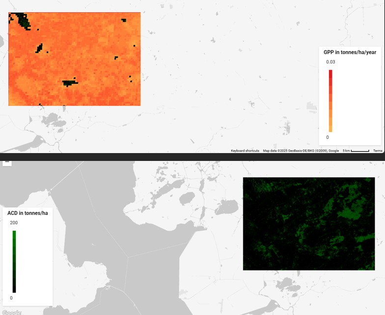

Carbon Sequestration
As environmental concerns rise, maps can be a useful way to try and locate important areas of conservation which is exactly what this task is all about. The two indicators in this map are: Aboveground carbon density (ACD) which roughly indicates the biomass and Gross primary productivity (GPP) which is the amount of carbon compounds produced by plants through photosynthesis in a period of time. For this map I chose a 'small' location in the north of the Netherlands which included a bit of forest and decided to map it out with the data included at this longitude and latitude. Once mapped, policy makers can use such images to serve as a tool to indicate areas of importance. Personally, I think it is important to continue to conserve the forest in the top left since it has a high ACD but also the bottom and left where there is almost no ACD but relatively higher GPP in spurts.